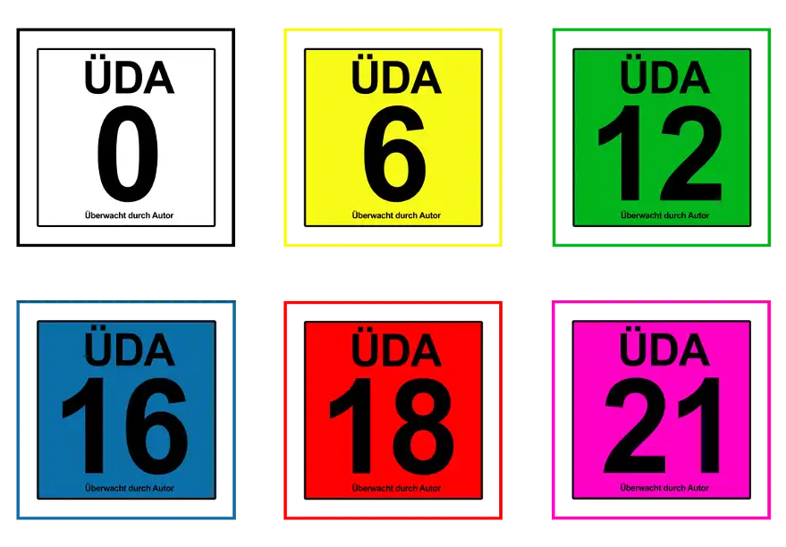

ÜDA UEDA überprüft und überwacht durch Autor
Es ist in der Film und Spieleindustrie üblich, Filme oder Spiele mit einer Altersfreigabe zu kennzeichnen. Hier sollen junge Menschen vor Inhalten geschützt werden, die ihrem Alter unangemessen sind, oder die für junge Menschen Gefährlich werden können. In der Printindustrie haben sich solchen Kennzeichnungen bisher nicht durchgesetzt. Weshalb kann ich auch nicht genau sagen. Ich bin der Meinung, dass auch geschriebene Worte unangemessen sein können. Auch können grausame, verstörende oder sexuelle Bilder in den Köpfen hervorgerufen werden. Meiner Meinung nach sollten Bücher ebenso eine Kennzeichnung tragen, um ersichtlich zu machen ab welchem Alter der Inhalt empfohlen wird. Deshalb: ÜDA - Überwacht durch Autor, mein Beitrag zu mehr Tranzparenz in Eigenregie.
kostenloser Download:
Hier klicken, um die UEDA Datei herunterzuladen
Da ich selbst Texte und auch Bücher schreibe, welche ich Kindern nicht empfehlen kann, beim besten Willen nicht, habe ich zum Schutz dieser diese Kennzeichen entworfen. Diese sind sehr stark angelehnt an die bekannten Kennzeichen der FSK und USK, ganz einfach um den Menschen zu signalisieren, wofür diese Kennzeichen da sind. Die Menschen kennen diese Art der Kennzeichnung und wissen was sie bedeuten.
Ja, diese Überwachung finded mit diesen Kennzeichen bei mir als Autor selbst statt und ich kann auch hier und da eine andere Meinung vertreten, als es vielleicht ein unabhängiges Gremium entscheiden würde. Ich kann mir nicht anmaßen zu entsvcheiden, welche Schriften für 6 oder 12jährige angemessen sind. Aber ich kann ganz klar sagen, welche Schriften aus meiner Feder eben NICHT für dieses Alter zu empfehlen sind.
Ich schreibe in verschiedenen Stilen und im Grunde können diese Schriften auch von Kindern gelesen werden, ohne dass diese Schaden nehmen. Aber ich möchte nicht, dass 6jährige, Werke von mir lesen die ich in einer vulgären, verherrlichenden, sarkastischen, brutalen, verachtenden, gewaltvollen oder sexuellen Schreibweise zu Papier gebracht habe. Ich bin fest der Überzeugung, dass Schriften wie gruselige Horrorgeschichten, brutale Actionerzählungen, oder erotische Liebesgeschichten eine Daseinsberechtigung haben. Aber ich bin auch der Überzeugung, dass Kinder und Jugendliche keinen Kontakt zu solchen Werken haben sollen.
Ich schreibe vor allem derbe Komödien, werfe mit Schimpfwörter um mich, wenn ich lustige Geschichten erzähle und tobe mich an der Tastatur mit Worten aus, die so, im täglichen Gebrauch nicht gesellschaftsfähig sind. Ich polarisiere und pranger, ich schimpfe und schreie in den Texten um mich. Und ganz einfach, weil ich diese polarisierenden Komödien schreibe, weiß ich: Das ist nichts für Kinder! Und deshalb markiere ich meine Bücher und Texte entsprechend.
Ich mache das freiwillig, es gibt keine gesetzliche Pflicht. Aber bei meinen Büchern, muss das sein. Es geht nicht anders.
#ÜDA

ÜDA Kennzeichnungen in der Übersicht

kostenloser Download:
Hier klicken, um die ÜDA Datei herunterzuladen
Im Grunde ist es mir egal, was andere Autoren machen um ihre Werke zu markieren oder die Leute zu informieren, ab welchem Alter ihre Bücher oder Texte gelesen werden sollten. Ich tu das mit diesen Kennzeichen, zum Schutz derer, die besser was anderes lesen sollten.
Gerne dürfen diese Kennzeichen von jedem Autoren heruntergeladen und genutzt werden, wenn dies gewünscht ist.
Ralf-Peter Kleinert, 13.12.2020